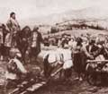

главная  персоналии
персоналии  Почиталин ??. Я.
Почиталин ??. Я.
главная |

Личность в историикраткая энциклопедияПроект «Личность в истории» посвящен людям — современникам грандиозных исторических событий, носителям редких качеств или людям, взгляды которых опередили их время. |
|||||
Коротко |
Статьи |
Персоналии |
Литература |
||
Почиталин ??. Я. |
|||||
|
«Верно служить государю и все делать, что ни заставит, учиться добру и привыкать к делам». Почиталин Я. Ф. |
 Авилов М. ??. и др. |
||||
Биографическая справкаПочиталин ??ван Яковлевич (1754 — после 1797) участник Крестьянской войны 1773–1775 гг. под предводительством Пугачева. Первый секретарь Пугачева, его перу принадлежит первый именной указ Пугачева а также ряд других его указов и распоряжений повстанческой Военной коллегии (на начальном этапе крестьянской войны). Принадлежал к «мятежной» стороне Яицкого войска. Примкнул к восстанию в числе первых сторонников, сопровождал Пугачева в его походах, по свидетельству очевидцев был его любимцем. Когда в ноябре 1773 года была учреждена повстанческая военная коллегия получил должность думного дьяка. В битве у Сакмарского городка (1 апреля 1774 г.) был захвачен в плен карателями. По утвержденному Екатериной II приговору Сената, был подвергнут тяжкому телесному наказанию и сослан на пожизненную каторгу в г. Рогервик. Самое позднее документальное свидетельство о Почиталине относится к 1797 г. Цитаты«…казаки в среду приедут … и что-нибудь положут, так вить это надобно писать, а у нас грамотея нет, так я хочу съездить в Верхний монастырь и там взять писаря, — так он покуда и станет всякие дела писать». (Протокол показаний Пугачева «Вить при нем взыскивать государь не будет, знает, что он в таковых делах небывалой. А он человек молодой, так лутче понатореет. А за ето (О Почиталине ??. Я. «Войска Яицкого коменданту и казакам, и всем служивым и всякого звания людям мое именное повеление. (Текст именного указа Пугачева, Список литературы
| |||||
|